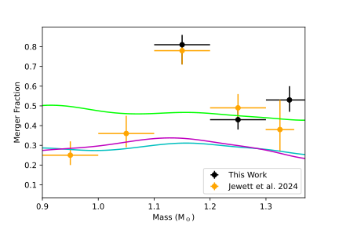

合体の痕跡を探す
それほど重い白色矮星は、もともと重かった一つの星から生まれたのだろうか。それとも、近くを回っていた二つの星が合体してできたのだろうか。白色矮星の現在の質量だけでは、どちらの道筋を通ったかを決めるのは難しい。形成の履歴が星の表面や動きに残している手がかりを集める必要がある。
JewettらはGaiaの位置・距離・明るさのデータから選ばれた、大質量白色矮星の候補を大規模に分光観測した。候補の選定条件は、推定質量が太陽の1.3倍以上、実効温度が11,000 K以上だった。293天体が条件を満たしたが、詳細に調べると、温度や質量が当初の推定と異なる天体もあった。既存の分光分類がなかった259天体のうち97%を追観測し、分光データから大気の組成や物理量を評価し直して合体の痕跡を探している。
強い磁場、通常と異なる大気組成、速い自転、冷却年齢と比べて特徴的な運動など、合体の痕跡として調べられる性質は複数ある。たとえば、連星が合体すると、軌道運動が持っていた角運動量の一部が残骸の自転に移る可能性がある。複数の特徴が重なれば、形成過程について、より説得力のある推定ができる。
重い白色矮星のおよそ半数
分析の結果、実効温度11,000 K以上を基準とする高温・大質量の観測標本で、質量が1.3太陽質量を超える60天体のうち、合体起源の割合は 53%（下側に6ポイント、上側に7ポイントの不確かさ） と見積もられた。この標本の最も重いグループでは、およそ半数が連星の相互作用と合体を経て現在の姿に至った、という解釈である。


図を選ぶと原寸画像を開けます。
原著図13が示すのは、合体起源と推定される割合を、白色矮星の質量ごとに調べた結果だ。観測による割合と連星進化モデルの予測が並び、質量が高くなる領域で得られた新しい制約の意味を理解しやすい。
研究では、標本中でもっとも重い白色矮星の質量を、中心部の組成に応じて約1.33～1.35太陽質量と推定した。ここでいう質量上限は、調べた標本と採用したモデルから得られる経験的な制約であり、すべての白色矮星に共通する理論的限界を直ちに確定した数字とは分けて考える必要がある。
星の合体は、その瞬間を観測できれば劇的な現象である。しかし、合体から長い時間が過ぎても、残された一つの星に過去の出来事の痕跡が刻まれている。現在の観測量をつなぎ合わせ、そこから星の履歴を逆向きにたどることが、この研究の面白さだ。